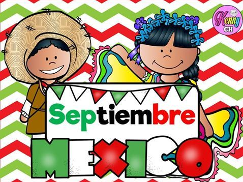

Septiembre es considerado el Mes Patrio en México por concentrar los acontecimientos más cruciales en el nacimiento del país como nación independiente, además de conmemorar la defensa de la soberanía nacional. En esta pagina web podras observar cuales son las fechas, personajes importantes y algunos mitos.
